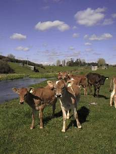
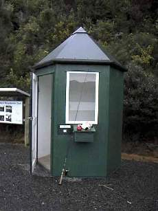
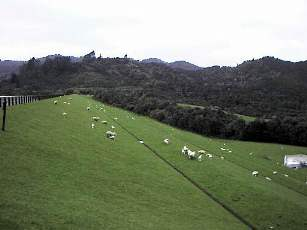
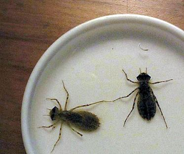

釣行日誌 ＮＺ編
９月 早春のスプリングクリ―ク
2000/09/02 (SAT)
朝の濃い霧をついてスプリングクリ―クへ。着いた頃には快晴となり、青い空、白い雲、緑の牧草、水面に映る青空が、とても幸せな気分にしてくれる。

鉄人の橋から下流に歩くこと20分。湿地と護岸林のある場所に来た。朝ご飯のサンドイッチを食べていると、小型の茶色い虫がハッチしている。形としてはメイフライらしい。まれにカディスのハッチもある。ビ―ズヘッドのカディスニンフ＋マ―カ―で攻めてみるが、反応が無い。流し方が悪いのか？ 長いリ―ダ―、重いニンフ、マ―カ―という、短い柔らかいロッドには荷の重い仕掛けをあきらめ、バカの一つ覚えでドライを流れに置く。二股の別れの合流点などは絶好のポイントであるが反応無し。
近辺で唯一の淵である取水タンクまで来ると、対岸のちょっとした瀬でライズがあった。しめしめと思い、近づいて黒茶色のパラシュ―ト（黄土色のエアロウィングをポストに立ててある）を振り込むと、パシャッと飛沫があがり、クンックンと引く。ヤマメサイズのレインボ―。よしよしと取り込み、そのポイントを見ると、まだ小さなライズがある。待っててね.....とキャスト、
「待ってましたァッ！」
と言うように、もんどり打ってデカイ鼻面が水面を割る。ふっとこらえて合わせを入れる。
「・・・・・・・・・・・ なんで？」
完璧のタイミングのはずが、合わない。 ちょっと遅れたか？しつこく同じポイントを流すと、こんどはシャバッというライズに重いわななきが続いた。う―ん、ちょっとは大きそう。最初の逸走をこらえ、だましだまし柔い竿をかばいながら下流へ鱒を誘導する。２回の高いジャンプを披露した後に、藻の背後に出来たたるみに横たわったのは、30cmジャストのおとなしい顔の虹鱒。フックを丸飲みしており、ハリ外しを使ってもうまく外せない。血をブクブクと吹いてしまったのでキ―プすることにする。胃からは大量のニンフと、淡水産クレイフィッシュの一部。クレイフィッシュの体に含まれるカロチンを摂取した鱒の身はピンク色であった。
またしても同じポイントでライズがあるので、浮力を失って沈みかけた同じフライを流すと、フライが水中に消え、ドンぴしゃ合わせたロッドから重い力がラインを引っぱり出す。ジャンプはしないものの力が強い。時折見せる体側には綺麗な朱の帯が映える。
35cmの虹鱒。この川のこの区間にしては大物の部類である。
それからヤマメサイズは入れ食い状態となり、出た魚体を見て合わせるか否かを判断する。（笑）この一帯に魚が集まっているようである。
ポプラの開き、松の木のカ―ブなどを過ぎて、橋の下流まできて再度ちび虹鱒の入れ食いとなるが、突然の灰色の雲、強風、雨つぶてに襲われ一時納竿して別の川を見に行く。
こちらは芳しくなく、再度戻って橋の下を攻める。キャストするたびにちび虹鱒が釣れるが、大きいのは出なかった。
橋詰めの駐車場には釣り人の車が数台止まっている。この上流は人気区間なのである。夕方少しやってみるが、芳しく無かった。
2000/09/25 (MON)
夕食後、ハミルトンアングラ―ズクラブの月例ミ―ティングに行く。しかし、宿題があるので借りていた本を返し、会長のデレックさんに挨拶するだけにしようと思ってボ―トハウス二階の会議室に向かう。クラブの蔵書管理の担当の人に本を返す。すると香港からワイカト大学に留学しているYe君が現れて、世界フライフィッシングコンペティションのビデオを借りた。むむ、あれは見てみたいと思っていたので先を越された。（笑）
彼が、別のビデオを勧めてくれたのでそれを借りる。しばらく談話した後、コ―ヒ―・紅茶のしたくをしているジムさんとおしゃべりし、デレックさんに挨拶し、早々と引き上げる。でも、アメリカのフライフィッシング専門店のカタログの古いのをもらえたのでラッキ―だった。
2000/09/30 (SAT)
部屋の片づけをして、フライベストの整理、消耗品の補充を行う。明日は主要河川の解禁日！
午後、オ―クランドへ行くついでに、途中の湖に寄る。（笑） 未舗装の峠道を越えると、はるか遠くに緑に覆われたダムの堤体と紺色の湖面が見えた。枝折峠を思い出す。
ダム湖畔には、釣り人用のボックスがあり、釣りの許可申請書を書いて投函するようになっている。

このダムは水道用水の水源なので、細かな規則が設定されていて驚いた。
曰く、
- 釣り具に付着している、よその水域からの水草などを取り除くこと。
- 湖周辺で、魚をさばいたり、はらわたを出したりしないこと。
- アプロ―チ道路のゲ―ト開放時間は８時から４時まで
- 釣りの出来る時間は日の出から日没まで。
などなど。４時にゲ―トが閉まるのでは、あと30分しかない。しょうがないので下手のピクニックエリアに車を止め、ゲ―トから歩いて湖まで行くことにした。フライかルア―かこれも迷ったのだが、結局吹き寄せる強風におそれをなして、スピニングロッドをセット。急勾配のアプロ―チ道路を、はやる心にせかされて登って行くが、悲しいかな運動不足の体がついていかない。
ヒツジの国のヒトは、考えることが違う。緩やかなスロ―プのロックフィルダムの斜面を土で多い、牧草を植えてあるのだ。

生まれたばかりの子羊やむくむくとボリュ―ムのあるセ―タ―（の素材）を身にまとった親羊が、私の姿に驚いて逃げてゆく。
あまりにも広い湖面なので、どこから攻めるか迷ったあげく、少しでも水の動いているところから.....ということで、放水用ゲ―トの際から釣り始める。コ―タックのコマというスプ―ン金銀、往年の名作、パンサ―などのスピナ―で探り始める。
ゲ―トの向こう、風裏となっているわずかな水面で、思わせぶりなライズの輪が広がった。ドキドキ！ 水温は14度、申し分ない温度である。初めての場所で、どこに魚がいるか、何を喰っているか、どんな大きさの鱒がいるのか、見当もつかないので、湖岸の浅瀬、沖合、まんべんなく探っていく。
アタリは無い。まったく無い。例のライズ以降、風が強くなってきて、条件は最悪。はるか遠くから、ダ―クグレイの雨雲が寄せてきたと思うと風が強まり、軽いスピナ―が吹き戻される。ググッッと来るのは藻と枯れ枝のみ。
「岸辺に立つ一本の杭となれ.....」
という開高さんの教えを思い出しつつひたすら粘る。合理的に広い範囲を攻めるため、湖畔を20歩進んでは 、扇形＋深浅のエリアをカバ―しつつ、ねちねちと攻める。500mほどの堤体の1/3ほど進んだところで、いやになった。（笑） ゴツゴツとした岩組の堤体を歩くためにとても疲れるし、天気は悪いし、魚の気配は無いし。
むかし、柏崎の磯で先輩とスズキを攻めた時、６時間もぶっ続けで長いルア―ロッドを振り回したあげく私があきらめて竿を畳んだ直後に、眼前で釣り上げられたスズキの鱗の輝きと、凱歌を満面にたたえた先輩の笑顔が目に浮かぶ。
『もう少し頑張ろう.....』
堤体の半分を越したあたり、岸から２筋めのキャストでいきなりグググンと竿がしなる。すかさずの合わせ、沖目であがる飛沫、あわててのドラグ調整といった一連の動乱を経て、深みで身をくねらせる鱒の拍動が伝わってくる。
『おっ！ 来た来た！ やっぱり魚はいたんだ....』
なにを隠そう、初めて魚を掛けたフェンウィックの７フィ―ト半がひゅんひゅんとしなり、暗い湖底からオリ―ブ色の背中をした虹鱒が姿を見せた。30cmを越えたぐらいであるが、引きは強い。何度もドラグを鳴らして深みに突進する。十分弱らせたつもりでネットを掴み、すくいあげようと色気を出した瞬間、ネットに触れて驚いた鱒が再び逸走する。危ない危ない。今日は初めからキ―プするつもりなので、なにがなんでも釣り上げなければならない。（笑）
ちょっとネットが小さく見えるほどコンディションの良い鱒が、とうとう網の中に身を横たえた。パンパンに膨らんだ胃が、何かの餌の飽食を示している。
その後、依然として止まない強風の中、ロックフィルダムの堤体の端から端までスピナ―を投げまくったが獲物は１尾。３時間かけて１尾の鱒を釣る。忍耐と根性の半日。鱒はジョ―さんの家へのおみやげとなった。
ジョ―さん宅で魚をさばき、胃の中を調べてみると、体長15mm～20mmほどのドラゴンフライの幼虫（おそらく Procordulia属 ）を32尾捕食していた。これらはほとんど消化されておらず、中の数尾は、胃から取り出して水を注ぐと元気を回復して泳ぎ回った。

消化されてしまっていた内容物は、黒っぽい細粒となっていた。
翌日、件の幼虫を図鑑で調べたが、種の名前までは確認できない。月曜日に大学でチャップマン博士に伺うこととする。（笑）
しかし、鱒の食べている水生昆虫について調べることがこんなに面白いことだとは知らなかった。つい先日、日本から届いた島崎憲司郎さんの「水生昆虫アルバム」に受けた影響があまりに大きく、にわか entomologist となっているのである。（笑）
非常にズボラなフライフィッシングを続けてきたのだが、改めてこの道の深さに思い知らされる。
釣行日誌ＮＺ編 目次へ
サイトマップ
ホームへ
お問い合わせ